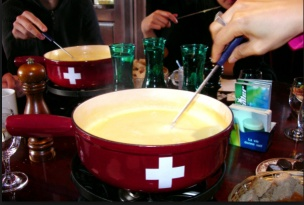

Anmeldung Sommertraining 2019
Fondue-Abend

Zum Abschluss der Saison findet wieder der Fondue-Abend im Clubhaus statt. Bitte meldet euch bis am 27.10.19 an.
Herzlichen Dank den Organisatoren der beiden IC-Mannschaften Herren 45+ und Herren 55+.
Infos und Anmeldung
Datum: Freitag, 1. November 2019
Zeit: Tennis ab 17:00 Uhr, Apéro und Essen ab 18:30 Uhr
News
Frondienst: Tragt euch im Clubhaus für eine Woche Platzwartung ein, falls ihr noch Frondienst leisten möchtet.
Platzwartung
Auf der Platzwartungsliste hat's noch ein paar Lücken. Eine Woche Platzwartung, und schon seid ihr von der Frondienstkaution erlöst ;-).
Mehr lesen...
Vandalenakt an der Clubanlage
Leider wurde unsere Clubanlage in der letzten Woche des Oktobers, vermutlich in der Halloweennacht, Opfer von Sprayern. Die Rückseite der
Übungswand, die anlässlich des Jubiläums 2017 durch einen jungen Künstler mit einem qualitativ hochstehenden Graffiti verschönert worden ist,
wurde durch Unbekannte mit hässlichen Sprayereien verunstaltet. Wir bedauern sehr, dass dadurch das Werk weitgehend zerstört worden ist, und dass
solche Vandalen ihr Unwesen in Brütten treiben. Wir hoffen, dass es sich dabei um einen einmaligen Bubenstreich gehandelt hat, Hinweise zur Tat
nehmen wir trotzdem gerne entgegen.
Interclub Heimspiele
Die nächsten Interclub Heimspiele auf der Tennisanlage in Brütten:
- 25. Mai 2019, 09:00: Herren Aktive
- 26. Mai 2019, 09:00: Herren 55+
- 26. Mai 2019, 13:30: Herren 35+
- 1. Juni 2019, ?: Damen 1 40+
- 2. Juni 2019, 13:30: Damen 2 40+
Änderungen sind jederzeit möglich. Bitte zusätzlich Swisstennis konsultieren.
Anmeldung Wintertraining 2018/19
Am 22.10.2018 starten die Wintertrainings von Sandro Tennis. Der Anmeldeschluss ist auf den 03.09.2018 datiert.
Spätere Anmeldungen werden natürlich auch noch entgegengenommen und berücksichtigt, sofern es noch Platz hat.
Weitere Infos unter Training.
Wintertraining 2019/20
Hier findet ihr den Trainingsplan 2019/20.
Anmeldungen sind jederzeit möglich, sofern es noch Platz hat, unter: Wintertraining 2019/20
Start Wintersaison 2019/20 Sandro Tennis
Die Wintersaison 2019/20 bei Sandro Tennis wird bereits wieder geplant. Anmelden könnt ihr euch unter folgendem Link:
Wintertraining 2019/20
Bitte meldet euch bis zum 19.8.2019 an. Spätere Anmeldungen werden natürlich auch noch berücksichtigt, falls es noch Platz hat.

Wintertraining 2018/19
Am 22.10.2018 starten die Wintertrainings von Sandro Tennis.
Der Anmeldeschluss ist auf den 03.09.2018 datiert. Spätere Anmeldungen werden natürlich auch noch entgegengenommen
und berücksichtigt, sofern es noch Platz hat.
Nachfolgend die Links für das Anmeldeformular der Wintersaison 2018/19 und die allgemeinen Geschäftsbedingungen:
Infos und Anmeldeformular
Geschäftsbedingungen
Anmeldung fürs Sommertraining 2019
Ab sofort könnt ihr euch bei Sandro-Tennis wieder fürs Sommertraining anmelden, unter folgendem
Link.
Die Sommersaison für das Training dauert vom 6.5. bis zum 13.7.2019, während der Sommerferien ist Pause, danach vom 19.8. - 5.10.2019.
Spezialtraining Turnhalle
Es besteht allenfalls die Möglichkeit, ein Training am Mittwoch von 13:00 - 17:00 Uhr in der Turnhalle Brütten durchzuführen. Vor allem geeignet für Kinder im Anfängerbereich von ca. 4 bis 9 Jahren.
Weitere Infos und Anmeldeformular unter folgendem Link
Sommercamps Sandro Tennis
Während den Sommerferien besteht die Möglichkeit, an den Tenniscamps von Sandro Tennis teilzunehmen.
Unter diesem Link findet ihr alle Informationen und Anmeldeformular:
Sommercamps 2019
Auch für Erwachsene oder Privatstunden möglich!
Doppel-Plausch Auwiesen
Am 28. März 2020 findet der Doppel-Plausch im Auwiesen statt. Anmeldung auch für Singles. Hier findet ihr weitere Infos, unter anderem zur Anmeldung:
Ausschreibung Auwiesenturnier.
Spielplan
Spielplan & Resultate
(Update: 15.7.19)
Den Spielplan pro Team findest du, wenn du dem jeweiligen Link zu Swiss Tennis unter dem Teamfoto folgst.
Aktuelle Daten von Swiss Tennis:
Jass-Tennisturnier
Am Freitag, 20. September 2019, findet wiederum das berüchtigte Jass-Tennisturnier statt. Anmeldung im Clubhaus oder direkt bei Adi Vogt.
Und hier noch die Ausschreibung.
Rückblick Tennis-Jassabend
Am 21. September fand wieder mal ein legendärer Tennis-Jassabend statt. Leider fiel das Ganze ein wenig dem Regen zum Opfer,
aber davon liess man sich nicht betrüben und jasste dafür umso mehr.
Und Trommelwirbel... Die diesjährigen Jassmeister sind... Tom Buck und Patrizia
Und natürlich dazu noch Bilder Tennis-Jassabend
Doppel-Clubmeisterschaften 2019
Am Samstag, 7. September finden wieder die Doppel-Clubmeisterschaften statt. Gekämpft wird in den Kategorien "Damen", "Herren" und "Mixed".
Meldet euch noch bis am 4. September direkt im Clubhaus an.
Ausschreibung
TCB-Sonntagsbrunch
Falls ihr euch nach den Strapazen der Doppel-Clubmeisterschaften wieder stärken möchtet, kommt doch gleich am Sonntag, 8. September zum TCB-Sonntagsbrunch.
Ab 10:00 Uhr wird ein reichhaltiges Brunch-Buffet angeboten.
Anmeldung und Infos.
Rückblick TCBrunch
Ebenfalls ein schöner Abschluss des Septembers gab es mit dem TCB Sonntagsbrunch. Dieses Jahr organisiert von Lisa, Susanne und Sybille.
Ein Riesen-Dankeschön den dreien.
Und hier die Bilder Sonntagsbrunch.
Probespiel Interclub
Erstmalig findet dieses Jahr vor der Eröffnung der Interclub-Saison innerhalb des TCB ein Probespiel statt.
Die Jungsenioren treten gegen die Senioren in einem Wettkampfmodus an, der einem richtigen IC-Spiel ähnlich sein wird.
Neben des Trainingseffekts steht natürlich wie immer auch der Plauschfaktor im Vordergrund.
Die Spiele beginnen am Samstag, 30. März 2019, ab 13:30 Uhr (nach dem Frondienst), Zuschauer sind herzlich willkommen.
Anmeldung TCB-Cup
Liebe Tennisspieler und Cup-Freunde,
um bereit zu sein für den Tag X, wo das Sportleben in der Schweiz wieder langsam erwacht, möchten wir Euch jetzt bereits zur Teilnahme am diesjährigen TCB-Cup einladen.
Wie Ihr mitbekommen habt, wurde der Interclub auf den Herbst verschoben und der TCB wird dort nur mit drei, statt mit den üblichen sechs Teams teilnehmen.
Sollte das Virus den Spielbetrieb vorher ermöglichen, wird der Cup mit etwas vorgezogenen Daten stattfinden.
Wir beginnen frühestens anfangs Mai und sobald der Spielbetrieb von Bund und Swiss Tennis freigegeben ist und die Plätze bereit sind.
Die Gruppenspiele müssen dann bis Ende Juli gespielt sein (keine Verlängerung), damit anschliessend bis Ende September genug Raum und Zeit ist für die Finalspiele (neben dem IC).
Ansonsten ist es der altbekannte TCB-Cup, zu dem wir Euch viel Spass wünschen.
Ausschreibung TCB-Cup
Anmeldung Doodle
Mit grosser Vorfreude und sportlichen Grüssen.
SPIKO TCB
Adi - Lisa - Tom
Premiere: Mixed Cup
Im letzten Jahr als Versuchsballon gestartet wagen wir heuer die Neulancierung
dieser saisonlangen Paar-Konkurrenz.
Alle weiteren Infos in der
Ausschreibung Mixed-Cup
SPIKO TCB
Adi - Lisa - Tom
Gewinner TCB-Cup 2018
Die Finalistinnen:
Regula und Adrienne
 3./4. Platz:
3./4. Platz:
Sylvie und Bettina
Die TCB-Cupspiele 2018 sind bereits wieder Geschichte, und die glücklichen Gewinner stehen fest:
Damen: Regula Blättler (2. Platz: Adrienne Bänninger)
Herren: Stefan Kammerlander (2. Platz: Christian Gross)
Ganz herzliche Gratulation den beiden, und vielen Dank an alle fürs Mitmachen, es hat riesig Spass gemacht.
(Herren leider ohne Fotos)
Eröffnungsapéro
Eröffnungsapéro für alle Mitglieder am Dienstag, 7. Mai 2019, um 18:30 Uhr.
Bei Marcus Pfister vom U-Sport in Winterthur könnt Ihr wieder diverse Rackets ausprobieren, Eure Ausrüstung auf den neusten Stand bringen und gleich mit anderen Mitgliedern auf dem Platz testen.
Anmeldung bitte bis 5. Mai bei Mike Vogt.
Clubmeisterschaft am Samstag, 6. Juli
Am Samstag, 6. Juli 2019, werden die Schlussspiele der Einzel Clubmeisterschaft in Brütten und Bassersdorf ausgetragen.
Beachtet bitte, dass deshalb den ganzen Tag alle Plätze für die Meisterschaft reserviert sind.
Vielen Dank für euer Verständnis. Den Teilnehmern und Zuschauern wünschen wir viel Spass.
Gewinner TCB-Cup 2019
Die TCB-Cupspiele 2019 haben auch dieses Jahr wieder regen Zulauf gehabt. Gegen den Schluss wurde es wieder eng auf den Plätzen, da man ja noch die letzten Spiele durchbringen wollte.
Neu wurde dieses Jahr zum ersten Mal in verschiedenen Kategorien gespielt, was den niedriger klassierten SpielerInnen eine Chance auf Finalspiele ermöglichte, und sehr positiv aufgenommen wurde.
Und hier sind sie, die Gewinner der A-Gruppe:
Damen: Adrienne Bänninger
Herren: Stefan Kammerlander
Bei der B-Gruppe:
Damen: Charlotte Mächler
Herren: Christoph Arn
Gruppe C:
Herren: Mike Harrer
Herzliche Gratulation, und vielen Dank an alle fürs Mitmachen, es hat riesig Spass gemacht.


{kind=link}
{kind=link}
{kind=link}
{kind=link}
{kind=link}